BLE 协议栈
一. 概述
BLE 协议栈采用的是分层的架构，有一组分层的协议的集合。他们协同工作已提供通信服务。协议栈的每个协议层负责执行特定的任务，通过分层，我们可以创建一个健壮和可靠的系统。
1.1 分层架构（Layered Architecture）
分层架构是一个非常经典的软件架构，特别是在嵌入式领域。它将系统划分为多个逻辑层级，每个层级负责特定的功能和责任。这种架构模式的目的是实现模块化、可维护和可扩展的系统。 在许多领域中，可以降低技术的复杂性。
举一个常见的例子：就像网络把消息从一个源地址发送的目标地址，我们发快递也类似。这里的快递系统是一个比较复杂的系统，涵盖了各种功能和组件。 但它也是分层组织的，就类似于BLE 协议栈或其他采用分层架构的协议栈。试想一下你发快递的的各个步骤。
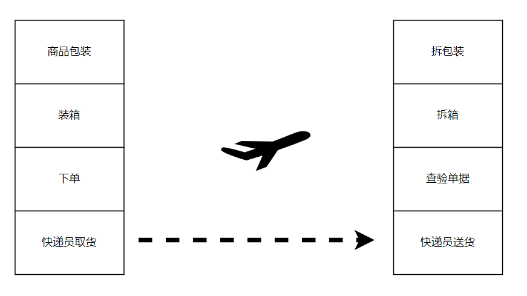1.2 分层架构的主要优点
抽象化
抽象化可以隐藏实现层的细节，我们无需关注复杂的实现细节，但我们仍然能够通过抽象接口与之交互。这样可以降低系统的复杂性，提高系统的可维护性和可扩展性。
关注分离点
旨在将复杂的系统设计分解为多个关注点（concerns），每个关注点只负责处理特定的问题，他们组合在一起实现整个系统。“分而治之”的策略，这是一种非常有效的降低复杂度的方法。
隔离层
通过引入不同的层级来隔离不同的功能和资源，以提供安全性、可靠性和可管理性。主要目的是将系统的不同部分分离开来，以降低相互之间的耦合度。各个层都是独立的，不应该受自身之外发生的任何事情的影响。 每个独立层不应该看到与它交互的直接层之外的情况，并且也不应该去关注其它层的事情。
系统中的某一个层的更改通常不会影响到其他层中的组件。使得测试和调试更加容易，每个层都可以独立测试。
1.3 协议栈
协议栈就是采用分层架构设计原则的协议架构
整个协议按照一定的规则分成多个组件协议，这些组件协议可以分别进行管理。并且在很大程度上可以独立进行处理和设计。
协议栈通常包含一组协议，其中协议栈中的每个协议执行特定的任务，并负责执行明确定义的功能。
这些组件协议通常被称为层，每个层为其上方的层提供服务，并从其下方的层接收服务。
下面看一个典型的多层协议架构的协议栈数据交互
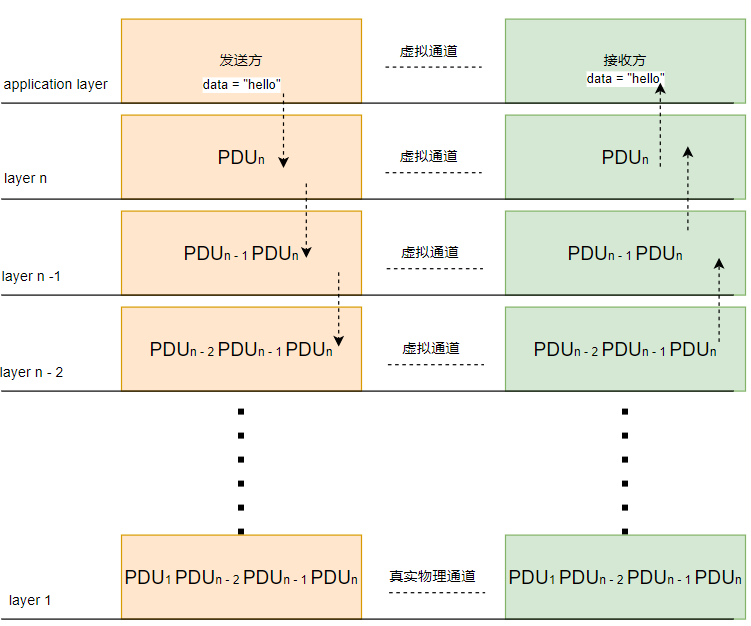发送方发送数据到接收方的流程如下：
发送方通过layer n 提供的服务向接收方发送数据。
layer n 协议组件将其控制信息（PCI）添加到数据中，组成 PDUn，并将PDUn传递到下一层。
后面的做着同样的动作,每一层都会添加自己的控制信息......
当数据到达物理层的时候，全部的信息会通过物理通道传送到接收端的物理层。
接收端的物理层接收到信息后，依次向上流动到更高层。每一个相应的层都会分析对端产生的控制信息。如果没有问题，那么数据将会被传送到下一个更高的层。
重复这个动作，直到数据达到接收方的应用层。
二. BLE 协议栈各层介绍
BLE 协议栈大致可分为三个子系统：application、host 和 controller
2.1 应用层（Application）
包含与运行在蓝牙设备上的应用程序相关的软件和功能。该层处理较高级的任务，如数据处理、用户界面和应用程序特定逻辑。
2.2 Host
Host包括协议栈的上层部分，如L2CAP、ATT、GATT等。这些协议组件负责设备的发现、连接的建立、速狙交换等高级功能。
此外，Host层还包含一组称为profile的模型。profile定义了特定用途的蓝牙设备之间的通信规范和行为。它们描述了在特定场景下使用蓝牙技术的详细步骤和要求。 确保不同蓝牙设备之间的互操作性，使它们能够相互通信并完成特定的任务。每个配置文件包含一个或多个协议的集合，这些协议规定了在特定使用模型下如何交互。如音频传输、健康监测、HID等。
2.3 Controller
蓝牙协议栈的最底层。它包含物理层（PHY）和链路层（Link Layer）。PHY，可以生成和接收2.4GHz频段的无线电波，对无线信号进行编码（GFSK），并通过天线发射出去。 还可以接收这些信号并进行解码，处理其中包含信息的数据包。
2.4 HCI（Host Controller Interface）
HCI 协议栈可选部分。它位于Host 和 Controller 之间，提供一个标准化的通新接口。
如果HCI 省略掉，这意味着Host 和Controller 的功能将由同一处理器实现。
如果HCI 包含在内，则允许设备在不同的供应商之间搭配使用Host 和 Controller。比如 USB dongle，USB dongle 插在电脑上，电脑上实现了 Host，dongle 实现了Controller，HCI interface通过USB提供。
2.5 协议组件
Host 和Controller 子系统包含哪些不同的协议组件？
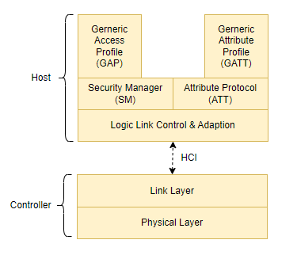①. GAP(Generic Access Profile)
GAP 在蓝牙规范中定义了BLE 通信中设备的角色和行为，还包括BLE 通信中的身份验证、加密和安全模式等程序。它确保设备在建立安全可靠的连接的同时保持互操作性。
GAP 定义了BLE 网络中设备可以扮演的不同角色：
广播者（Broadcaster）
观察者（Observer）
主机（Central）
从机（Peripheral）
在无连接的通信中（broadcasting）,设备之间交互信息无需先建立连接。所涉及的BLE 设备将扮演广播者和观察者的角色。广播者将在网络中广播自己的信息，观察者按需接受此类信息。
在面向连接的通信中（unicast），只有两个设备之间建立连接后才可交互信息。所涉及的设备将扮演主机和从机的角色。
建立连接的过程，第一步是设备发现，在这一步中，从机将周期性的发送广播包，其中可以包含自身的相关信息，如设备名称、服务和其他标识等。这样从机就向周围的设备宣告了自己的存在。 主机则通过扫描广播包来发现周围的从机设备。扫描可以是主动扫描，也可以是被动扫描。一旦主机发现了自己想要连接的从机，他可以选择发送连接指示（connection ind）给从机设备。
连接一旦建立，两个设备之间就可以互相传输数据。
总之，GAP 定义了BLE 通信中设备的角色、程序和行为，包括广播、扫描、连接发起和安全等方面。它确保设备在链路层状态转换过程中遵循指定的协议和规则。
下图以nordic BLE 协议栈 17.1.0为例，列出GAP提供的API 和EVENTS。
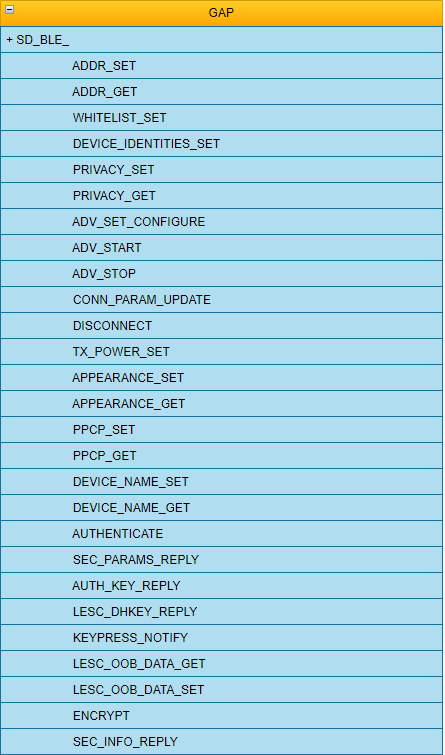 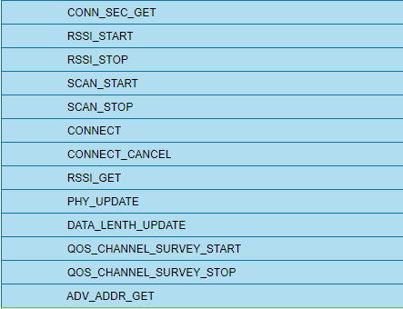 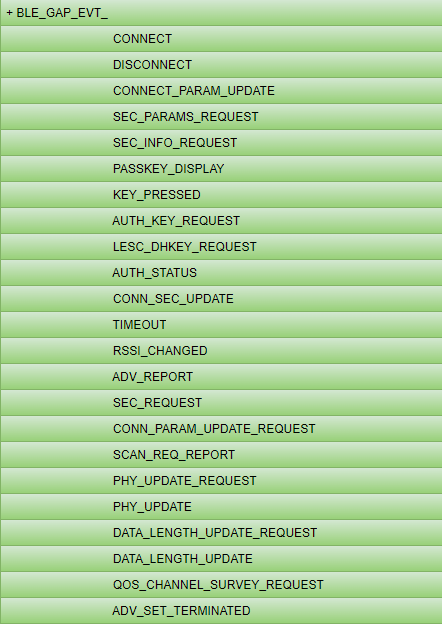②. ATT（Attribute Protocol）
ATT 使用了客户端-服务器模型，服务器将实际数据存储在属性（Attribute）中，属性可以视作数据的容器，服务器向客户端公开这些属性。ATT还定义了属性的数据结构和格式。 每个属性具有属性标志，用于定义其权限（read、write、notify）、数据类型和大小，每个属性都有一个唯一的标识符，成为属性句柄（Attribute Hnadle）。
ATT定义了两个角色如下：
服务器（Server）
服务器可以公开一系列属性（Attributes），这些属性可能包含数据、配置信息、设备状态等。其他设备可以通过读取和写入属性值来控制服务器的行为或获取服务器提供的数据。 除了数据属性之外，服务器还可以提供其他功能，如特征（Characteristics）和服务（Services）。特征是属性的集合，通常表示服务器所支持的某种功能或操作。服务是特征的逻辑容器，它定义了一组相关的特性。 服务器通过接收来自对端设备的命令，并根据命令类型执行相应的操作。并发送responses、notifications 和indications 给对端设备。
客户端（Client）
客户端的目的是与服务器进行连接，以读取服务器的公开数据和一些控制服务器行为。客户端可以发送commands 和requests 以获取特定属性的值，或发送命令来触发特定的操作。 客户端还可以接受服务器发送的notifications 和indications，以获取实时的数据更新或一些重要的事件信息。
服务（Services）和特征（Characteristics）都是属性的一种类型。服务是一组相关特征的集合，它们通常代表设备提供的一种功能或特定服务。每个服务都有一个唯一的标识符，称为服务 UUID（Universally Unique Identifier）。 特征是属性的具体实例，是服务中的具体数据单元。特征也具有唯一的标识符，称为特征 UUID。特征可以包含属性值、描述符（Descriptors）和权限信息。属性、服务和特征的层次结构提供了一种有效的方式来访问和控制设备的数据和行为。
下图展示了属性的逻辑组成
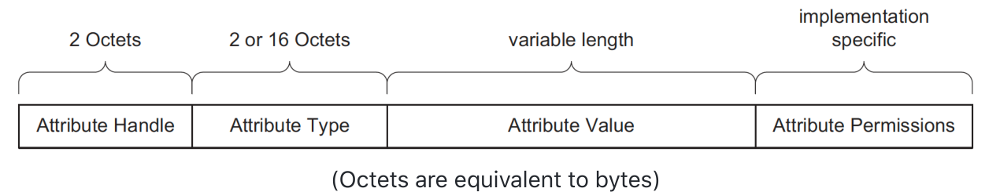Attribute type (Universally Unique Identifier or UUID)
属性的唯一标识符可以是16位或128位的数字，具体取决于属性的类型。Bluetooth SIG 采用的属性，其唯一标识符通常是一个16位的数字。这些属性是由Bluetooth SIG定义和标准化的，适用于广泛的蓝牙设备。 对于开发者定义的自定义属性类型（有时也称为供应商特定UUID），其唯一标识符则是一个128位的数字。开发者可以根据自己的需求定义和使用这些自定义属性类型，以满足特定设备或应用程序的要求。 Bluetooth SIG预定义的UUID 是0000xxxx-0000-1000-8000-00805F9B34FB，其中"xxxx"是具体的属性标识。
Attribute Handle
属性句柄（Attribute Handle）是服务器分配给每个属性的一个16-bit值，可以将其视为属性的地址。客户端使用该值来引用特定的属性，并且服务器保证在两个设备之间的连接生命周期内唯一标识该属性。属性句柄的取值范围是0x0001-0xFFFF，其中0x0000的值被保留。
Attribute Permissions
属性权限（Attribute Permissions）决定了属性是否可以被 read、write，是否可以notified 或 indicated，以及执行这些操作所需的安全级别。 这些权限不是通过ATT 来定义或发现的，而是在更高层（GATT）进行定义。
③. GATT（Generic Attribute Profile）
GATT 主要用于在BLE设备之间定义和组织属性（Attributes），以及描述属性之间的关系和行为。它提供了一种层次结构，使得设备可以公开和访问属性，规定了与这些属性进行交互的过程，如服务发现、特征读取、写入、通知和指示等操作。 属性以服务（Services）和特征（Characteristics）的形式进行组织和描述。
GATT 与ATT 具有相同的角色。这些角色不是根据设备的类型来定义的，而是根据设备的行为来定义的。因此，在这个意义上，一个设备可以作为服务端向客户端提供数据，并且同时充当客户端读取其他服务器提供的数据。
Services
一个服务是一组属性的集合，其中一些属性被定义为特征（Characteristics）。服务的目的是将相关属性组织在一起，以满足服务器上的特定功能或服务。通过使用服务，可以使设备的功能和特性更加清晰和可管理。 服务也可以包含其他非特征的属性，这些属性提供了关于服务本身和特征的额外信息和描述。如服务声明（Service Declarations）、特征声明（Characteristic Declarations）和描述符（Descriptors）等。
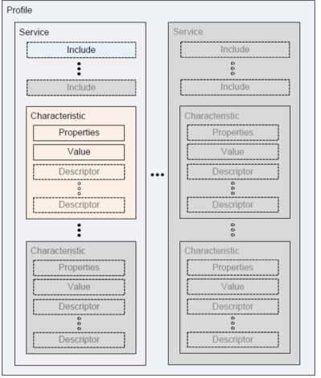有两种类型的服务：
Primary Service：用于表示设备的主要功能或核心功能。一个设备可以有一个或多个主要服务，每个主要服务代表设备的一个主要功能模块。 例如，一个智能家居设备可能有多个主要服务，如照明服务、温控服务和安防服务。照明服务可以包含特征来控制灯光的开关和亮度，温控服务可以包含特征来设置和读取温度信息，安防服务可以包含特征来监控和控制设备的安全状态。
Secondary Service：提供设备的辅助功能，并且至少被设备上的一个Primary Service引用（包含），作为主要服务的补充或扩展。但它使用场景相对较少，很少被使用。
Characteristics
一个特征（Characteristic）始终是一个服务的一部分，它表示服务器希望向客户端公开的信息或数据。例如，电池电量特征（Battery Level Characteristic）表示设备电池的剩余电量，客户端可以通过读取该特征来获取电池电量的信息。 除了特征值本身，特征还可以包含其他属性，这些属性有助于进一步描述和定义特征值。
Properties：由一组位（bits）组成，定义了特征值的使用方式。包括：read、write、write without response、notify、indicate。
Descriptors：用于包含与特征值相关的附加信息。比如：extened properties、user description、notifications 和indications的订阅指示字段。
理解这些概念是重要的，然而，作为应用程序开发者，你可能会使用芯片组或移动操作系统SDK 提供的API，这些 API 封装了许多这些概念的细节。 高级抽象的API 可以帮助你快速实现应用和业务逻辑，但在某些特殊情况下，了解底层的概念和实现细节仍然是有益的。特别是在遇到问题、进行故障排除或开发复杂功能时，对底层的理解和调试能力可能会起到重要作用。
尽管在一个服务中可以包含多个特征值，但服务的设计理念是将相关特征值组合在一起，定义设备的特定功能，并提供更好的结构和管理。因此将不同的功能分别放在独立的服务中是一种良好的设计实践，可以提高设备的可读性、灵活性和可扩展性。这样的设计能够更好地满足用户的需求，并提供更好的用户体验。
值得一提的是，如果设备声称符合某个服务，那么它必须按照蓝牙特殊兴趣组织（Bluetooth SIG）发布的服务规范进行实现。这对于开发一个能够与其他厂商的第三方设备进行连接的设备来说非常重要。蓝牙 SIG 采用的服务使连接规范在不同厂商之间互联互传。
Profiles
Profile 定义了一组规范和规则，用于描述设备之间的通信行为和功能。它们可以包括多个服务、特征值和其他相关参数，以实现特定的功能或应用场景。它涉及定义客户端和服务器在服务、特征值、连接和安全需求方面的行为。 Profile通常是为特定的应用或者案例设计的，它们提供了一种标准化的方法来定义设备之间的通信和交互方式，确保不同厂商的设备能够在特定的应用场景中互操作。 服务及其规范更专注于服务器端对服务和特征值的实现。服务规范定义了服务的结构、特征值、属性和行为等方面的详细要求，以确保服务器按照规范提供相应的功能和数据。
就和服务一样，Bluetooth SIG 也定义发布了一些Profile。例如《Human Interface Device Profile》、《Blood Pressure Profile》你通常可以在Profile specification里找到以下内容：
角色定义和GATT服务器与客户端之间的关系。
所需要的服务以及服务要求
所需要的服务和特征值的使用方式
建立连接要求的详细信息，包括广播和连接参数等。
安全要求，包括加密、身份验证和授权等。
④. Link Layer
链路层处在协议栈的倒数第二低层，负责管理LE 无线电状态等功能。它提供了建立和维护连接、控制无线电以及确保高效可靠数据传输的基础。
为了实现这些功能，链路层依赖于状态机的工作原理。状态机是一种模型，它根据不同的事件和条件，决定系统在不同状态之间的转换和行为，状态转换和行为是明确定义的。
就像水有三种状态：固态、液态和气态，每种状态的转换都是明确定义的。如把水从固态转变为液态，需要加热到熔点；从液态转换为气态，需加热到沸点。 水在三种状态下的行为也不同，如在固态下呈现冰块或冰晶的形式。水分子以规则的晶格结构排列；在液态下，呈现为自由流动的状态，分子之间相对自由流动；在气态下，有较低的密度，能够扩散和升腾到空气中。分子自建有较大的间距。
链路层的状态机也是如此，它定义了不同的状态和状态之间的转换，以及在不同状态下的行为。链路层的状态机定义了LE 无线电的不同状态，以及在不同状态下的行为。它还定义了不同事件和条件下的状态转换。
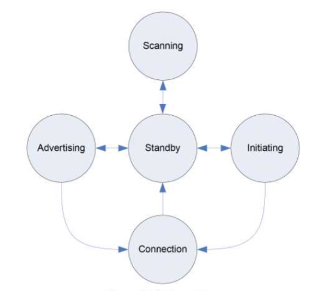Standby state
在Standby state 状态下，LE radio 并不会有什么操作，它是一种空闲的状态，既不发送数据也不接受任何数据包。 它等待事件或命令以切换到其他状态。
Advertising state
在Advertising state 状态下，LE radio 会周期性的发送广播包，以便其他设备可以发现它。广播包包含设备的相关信息，如设备名称、服务和其他标识等。广播包可以被范围内的支持BLE的设备所接收到。
Scanning state
在Scanning state 下，LE radio 会监听范围内其他支持LE 设备的广播包。
initiating state
在initiating state 下，LE radio 会尝试与另一个支持LE radio 的设备进行连接。 LE radio 可以从Standby State 进入。
Connection state
Connection state 下，LE radio 与另一个支持LE 的设备建立了连接，两个设备之间可以进行数据交互。
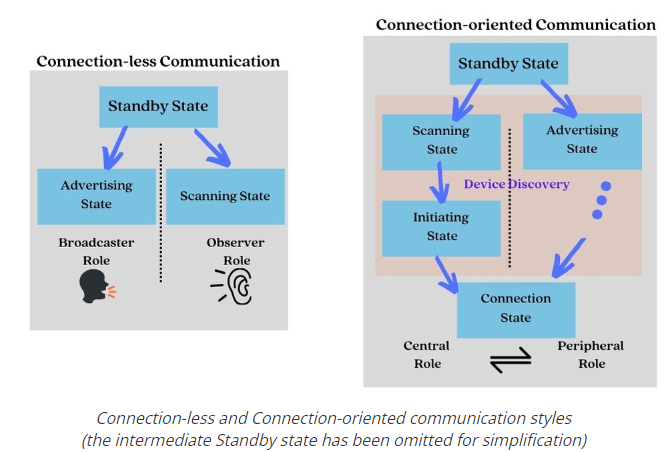⑤. Physical layer
PHY 在BLE 协议栈的最底层。这与传输信息所使用的物理方法有关，在这种情况下是使用射频波通过空中传输和接收原始比特。PHY 定义了如何将这些比特调制到RF载波波上，以及无线电硬件如何发送和接收这个RF载波波。 BLE无线电在ISM频段（2.4G Hz spectrum），该频段被分为40个RF 信道，每个信道相隔2 MHz（中心到中心）。
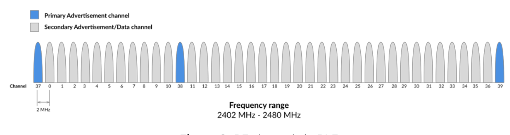LE radio遵守以下规则：
使用高斯频移键控（Gaussian Frequency Shift Keying，GFSK）作为调制方案。
使用跳频扩频技术（Frequency Hopping Spread Spectrum，FHSS）。该技术允许通信的两个设备在随机（事先协商的）选择的频率上切换以进行数据交换。这大大提高了可靠性，并使设备能够避免可能被其他设备占用的频道拥塞。
发射功率级别：最小值为0.01 mW（-20 dBm），最大值为100 mW（+20 dBm）（适用于BLE version>= 5），最大值为10 mW（+10 dBm）（适用于BLE version<= 4.2）。发射功率的范围取决于设备的版本和要求。
允许的数据速率：LE 1M PHY无线电的数据速率为1 Mbps，LE 2M PHY无线电的数据速率为2 Mbps，LE Coded PHY无线电的数据速率为500 kbps或125 kbps。数据速率取决于设备所采用的物理层。
使用高斯频移键控（Gaussian Frequency Shift Keying，GFSK）作为调制方案。